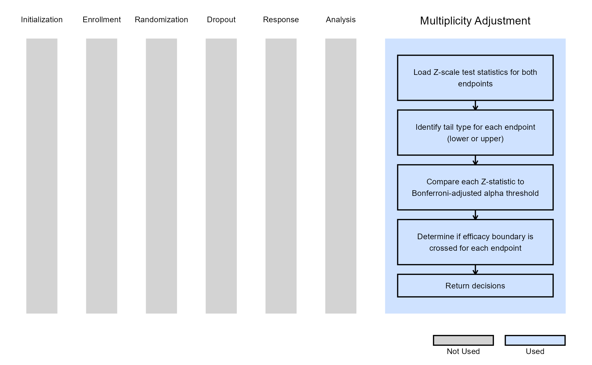

Dual Endpoints - Multiplicity Adjustment
Gabriel Potvin, Anoop Singh Rawat, Pradip Maske
October 31, 2025
DEPDecisionsUsingMCP.RmdThis example is related to the Integration Point: Multiplicity Adjustment. Click the link for setup instructions, variable details, and additional information about this integration point.
- Study objective: Two Arm Confirmatory
- Number of endpoints: Dual Endpoints
- Endpoint type: TTE-TTE or TTE-Binary
- Task: Explore
- Statistical Design: Fixed Sample
Introduction
The following examples illustrate how to integrate new multiplicity adjustment capabilities into East Horizon using R functions in the context of 2-arm clinical trials with dual endpoints.
In the R directory of this example you will find the following R file:
- GetDEPDecisionsFSD.R - Performs multiplicity-adjusted decision-making for dual endpoints using Z-scale test statistics.
Example 1 - Fixed Sample Dual Endpoints Multiplicity Adjustment
This example is related to this R file: GetDEPDecisionsFSD.R
The GetDEPDecisionsFSD function computes decisions for a dual-endpoint fixed sample clinical trial using the Bonferroni adjustment for multiple testing.
It evaluates the test statistics for each endpoint and determines whether the efficacy boundary has been crossed. For lower-tail tests, it compares the cumulative probability of the test statistic to half of the total alpha, and for upper-tail tests, it uses the upper-tail probability. If the probability is below the threshold, the endpoint is marked as having crossed the efficacy boundary; otherwise, no boundary is considered crossed. The function returns a list containing the endpoint decisions. This implementation assumes a single-look, fixed sample design with no dropouts.
The figure below illustrates where this example fits within the R integration points of Cytel products, accompanied by a flowchart outlining the general steps performed by the R code.
